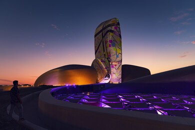

**Visual Narratives of Dhahran** Expressions through brush and lens have always been the fundamental means through which artists and photographers capture the essence of time, place, and identity. In the Saudi city of Dhahran, this tradition of storytelling is particularly vibrant, with its unique blend of modernity and tradition creating a rich canvas for both artists and photographers. The city, known for its historical significance in the oil industry and its proximity to the Persian Gulf, has witnessed profound changes over the decades. Yet, its visual narratives, expressed through both paintings and photographs, remain deeply rooted in its culture and evolution. Dhahran, which emerged as a small settlement in the early 20th century due to the discovery of oil, has grown into a bustling modern city with a complex mix of cultural heritage and rapid development. The city's landscape—marked by wide roads, oil refineries, and sprawling residential areas—serves as a backdrop for the stories that unfold through the eyes of local and visiting artists. The towering skyscrapers that dot Dhahran’s skyline, alongside the traditional architecture of its older neighborhoods, provide a striking contrast. It is this juxtaposition of old and new that has inspired many visual storytellers to capture the city's unique essence. In Dhahran, the lens often focuses on the lives of those who have witnessed the city’s transformation. From the workers in the oil fields to the expatriates who made their homes in this oil-rich region, each individual carries a story that contributes to the broader narrative of the city. Photographers, with their cameras poised, capture fleeting moments: a laborer silhouetted against the fiery sunset sky, the intricate details of a traditional Arabian dress, or the subtle interplay of light and shadow in the bustling markets. These images are more than just visual representations; they are reflections of Dhahran's evolving identity. Local artists, too, have long found inspiration in the stories of the people of Dhahran. The city's history is one of transition—from a quiet fishing village to a global epicenter for oil production. The impact of this shift is woven into the work of painters and sculptors, whose creations capture the changing social fabric and economic landscape of the region. Brushstrokes tell the tale of a community that has seen immense growth, yet continues to hold onto its cultural roots. In a painting, a traditional dhow might glide through the waters of the Gulf, juxtaposed with the looming presence of modern oil rigs and refinery towers on the horizon, symbolizing the delicate balance between tradition and progress. One of the most significant influences on Dhahran’s visual narratives has been the influx of international photographers and artists who have come to the region in recent decades. The rise of the oil industry brought people from all over the world to Saudi Arabia, and Dhahran, in particular, became a melting pot of cultures. This diversity has enriched the city’s visual expressions, bringing new perspectives to how the city is viewed and experienced. The international community has contributed to the artistic landscape by introducing new techniques, materials, and ideas, creating a fusion of styles that reflect the city's cosmopolitan nature. As a result, the visual narratives of Dhahran are not confined to a single style or approach but are a mosaic of influences from all corners of the globe. Photography, especially, plays a vital role in telling the story of Dhahran’s transformation. The city’s rapid modernization is often captured through the lens of the camera, juxtaposing the stark contrasts between the city's past and present. From the 1950s, when Dhahran’s oil industry was just beginning to thrive, photographers have documented the progression of the city. Early black-and-white photographs show oil rigs being built, workers in hard hats, and the first signs of urban development. These photographs serve as historical documents, reminding us of the hardships, aspirations, and dreams that shaped Dhahran into what it is today. As the city continued to develop, color photography began to take hold, capturing the vibrancy and dynamism of the modern city. Photographers began to document not just the industrial growth but also the everyday life of the people. In the streets of Dhahran, market scenes, family gatherings, and celebrations were photographed with a focus on the human experience. The images provide a window into the lives of Dhahran’s residents, capturing emotions and moments of joy, as well as the quieter, more intimate scenes that often go unnoticed. One of the defining aspects of Dhahran’s visual narrative is its connection to the oil industry. The city is built on oil, and this industry has shaped every aspect of life in Dhahran. The skyline is dominated by the massive oil refineries, and the rhythm of daily life is dictated by the ebb and flow of the global oil market. Artists and photographers have long been fascinated by the machinery, the workers, and the constant hum of the industry. Oil rigs, pipelines, and industrial complexes have become subjects in their own right, representing both the prosperity and challenges of the city. However, the visual narrative of Dhahran is not just about the oil. It is also about the human connections, the relationships that have been built over decades of living in this unique environment. There is a growing recognition that the cultural and personal aspects of life in Dhahran deserve as much attention as the oil industry itself. This has led to a new wave of artistic expression, focusing on the people who call Dhahran home. It’s no longer just about capturing the industrial landscape, but also about telling the stories of the families, the traditions, and the dreams that define this city. As Dhahran looks towards the future, the visual narratives of the city continue to evolve. With the rise of new technologies, including digital photography and virtual reality, the way in which stories are told is also changing. Artists and photographers now have the ability to create interactive experiences that allow audiences to engage with the city in innovative ways. Virtual tours of Dhahran’s historic neighborhoods, interactive art installations, and digital storytelling platforms are just some of the ways in which the visual narratives of the city are being told in new and exciting formats. In conclusion, Dhahran’s visual narratives are a testament to the city’s growth, its cultural diversity, and the resilience of its people. Through the brushstrokes of painters and the lenses of photographers, the city’s rich history and dynamic present are captured for future generations to witness and appreciate. As Dhahran continues to evolve, its visual stories will undoubtedly grow and change, offering new insights into the life and culture of this fascinating city.

Visual Narratives of Dhahran
👁️ Views: 4798
❤️ Likes: 3087
📤
Comments